遊びで植物を育てよう
2024/11/04
ゼラニウムが1本枯れました。

タネから育てていたゼラニウムが1本枯れました。
何鉢もあるので1本くらい枯れたってどうってことないですが、ちょっと寂しい。

タネが落ちて庭で発芽してしるものがあったので、これを抜いて育てることにしました。

枯れた場所に挿しました。後から思ったんですが、土は変えた方がよかったかもしれない。
【ゼラニウムTOP】
【果物TOP】
【園芸TOP】
2022/04/23
去年種蒔きしたゼラニウムが咲きました。
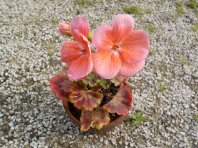
種蒔きしてから1年経たずに開花しました。草なのでこんなものなのかな？
実生なので親とは違う性質になるんですが、これは親より葉色が赤いです。（今だけかもしれないです。）
【ゼラニウムTOP】
【果物TOP】
【園芸TOP】
2022/02/12
真冬ですが、ゼラニウムがいい感じに咲いています。

2月でも玉のように花が咲くんですね。
軒下で寒いんですけど、負けずに咲いています。凄いな。
色違いの2株が両方咲いてるので、ゼラニウムはこんなもんなんでしょうね。
【ゼラニウムTOP】
【果物TOP】
【園芸TOP】
2021/12/25
年の瀬でもゼラニウムが咲いています。

花の期間が長くていいですね。
買って良かったって思います。
植替えしたら、どこまで大きくなるでしょうね。大きくなったら見栄えがいいだろうな。
【ゼラニウムTOP】
【果物TOP】
【園芸TOP】
2021/10/31
実生のゼラニウムを鉢上げしました。
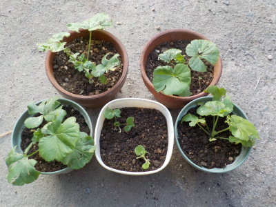
雨に撃たれて全滅したゼラニウムですが、その後発芽したものが大きくなったので鉢上げしました。
親はピンクとオレンジ色の花でしたが、何色の花が作でしょうね。
違う色になるとうれしいですが、どうなるでしょう？
【ゼラニウムTOP】
【果物TOP】
【園芸TOP】
2021/10/03
ゼラニウムの種が出来ない。
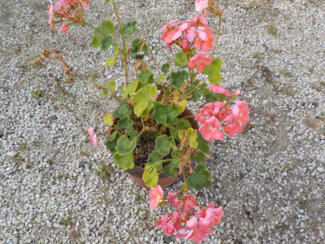
近頃ゼラニウムの種が出来ません。
夏場は種が出来ないものなのかなー。
でももう10月なので出来ても良さそうですが、どうなんでしょう。
【ゼラニウムTOP】
【果物TOP】
【園芸TOP】
2021/08/13
ゼラニウムが雨に打たれてなくなりました。
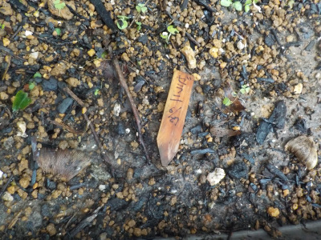
種蒔きして発芽したゼラニウムですが、雨に打たれれて消えてしまいました。
ネームプレートは後からわざとらしく置きました。
強い雨に当たれば小さい芽が倒れるのは当たり前ですね。
また花を受粉させて、種を採って蒔こうと思います。
【ゼラニウムTOP】
【果物TOP】
【園芸TOP】
2021/07/18
ゼラニウムをプランターに植え替えしました。
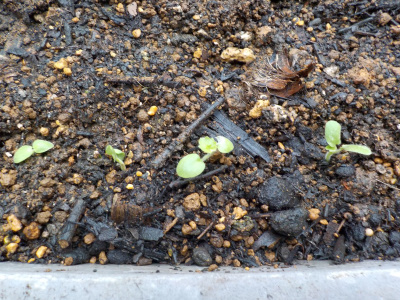
まだ小さいですが発芽したゼラニウムをプランターに植え替えしました。
種から簡単に発芽するって分かったので、同じプランターに種蒔きもしました。
順調に育ったら、プランターの中はゼラニウムでギュウギュウになるでしょう。
【ゼラニウムTOP】
【果物TOP】
【園芸TOP】
2021/07/11
ゼラニウムが発芽しました。
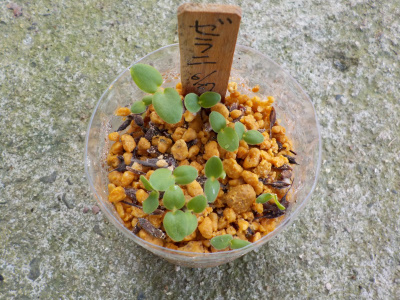
葉っぱが大きいですね。すくすく育ちそうな感じがします。
数があるのでポットに1個1個植えないで、プランターにまとめて植えようかな。
どんな花になるか楽しみです。
【ゼラニウムTOP】
【果物TOP】
【園芸TOP】
2021/07/03
飛んでいきそうなゼラニウムの種を収獲しました。
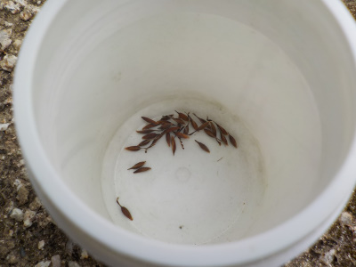
はじけた種が、いくつもぶら下がっていたので収獲しました。
今日だけで、これだけ採れました。
羽が出る直前のタイミングだったみたいです。
【ゼラニウムTOP】
【果物TOP】
【園芸TOP】
2021/06/27
ゼラニウムの種蒔きをしました。
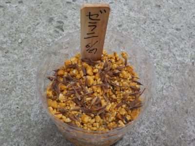
ゼラニウムの種をとりまきしました。
3月にも種蒔きしていますが、それは発芽していません。たぶん失敗です。
今回は種を大量に蒔いたので、成功して欲しいです。
【ゼラニウムTOP】
【果物TOP】
【園芸TOP】
2021/06/03
ゼラニウムの種は空っぽでした。
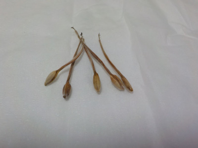
ゼラニウムの種を採ったんですが、中に種が入っていませんでした。
ガッカリです。
次採る時は種が入っていて欲しいです。
【ゼラニウムTOP】
【果物TOP】
【園芸TOP】
2021/04/22
ゼラニウムの花が咲きました。
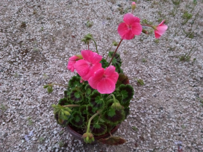
これからしばらく花が楽しめそうです。
受粉作業をして種を沢山採ろうと思っています。
【ゼラニウムTOP】
【果物TOP】
【園芸TOP】
2021/03/28
去年採ったゼラニウムの種をまきました。
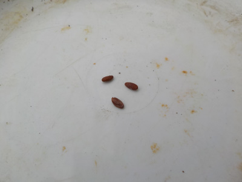
ゼラニウムの種が採れるって気づいたのが冬たったので、3粒しか種が採れませんでした。
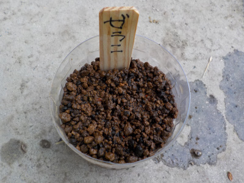
大事な3粒をペットボトルにまきました。
発芽するといいですね。
【ゼラニウムTOP】
【果物TOP】
【園芸TOP】
2020/11/15
ゼラニウムが大きくなりました。

4月に買ったゼラニウムですが、今シーズンでずいぶん大きくなりました。
幹が太くなったので、来年は挿し木が出来そうです。
今でも花が咲いているので、花期が長くてとってもいいです。
【ゼラニウムTOP】
【果物TOP】
【園芸TOP】
2020/04/26
ゼラニウムを買いました。

とっても安かったので買いました。
1つ税込みで100円でした。
大事に育てて大きくするつもりです。
【ゼラニウムTOP】
【果物TOP】
【園芸TOP】
ゼラニウムはなんとなく和風な感じがします。田舎の家にありそう。
【おいしいものを食べよう。】【しっかり寝よう。】
【ソロ活をしよう!】【季節感のあることをしよう。】【動画視聴はほどほどに。】【当サイトの全てのコンテンツは無断転載禁止です。】